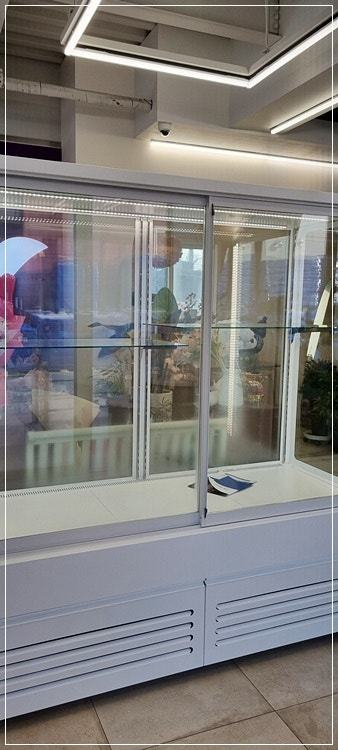
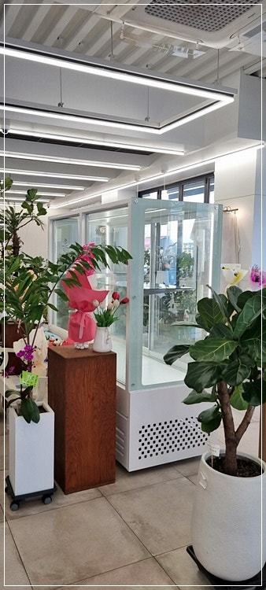
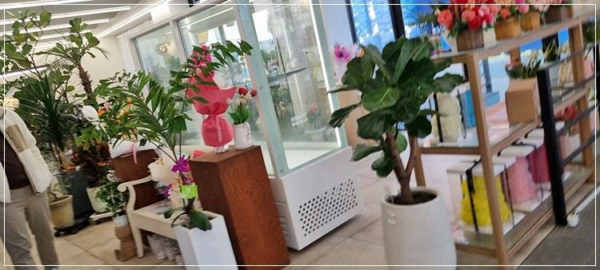
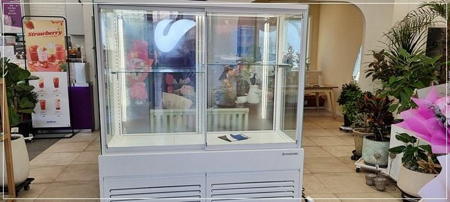
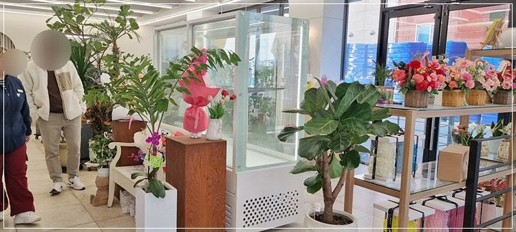
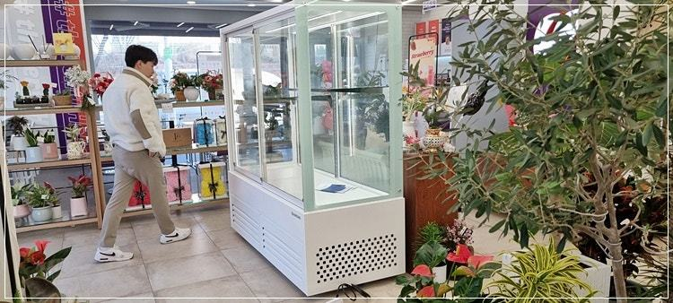
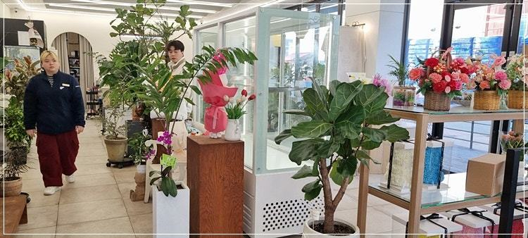
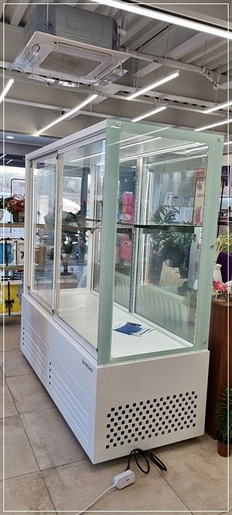

꽃냉장고
꽃냉장고 가격, 견적서에서 꼭 나눠 볼 항목들

꽃냉장고 가격은 생화 줄기 길이에 맞춘 높이, 사방으로 보이는 유리 면적, 찬 바람이 꽃에 직접 닿지 않게 하는 냉각 구조에서 가장 크게 갈립니다. 문 방식과 물 빠짐 처리까지 같은 조건으로 맞춰 놓고 견적을 비교하셔야 실제 차이가 보입니다.
안녕하세요. 꽃집과 플라워 카페에 들어가는 꽃쇼케이스를 매장에 맞춰 만드는 한성쇼케이스입니다.
새벽 꽃시장에서 골라 온 생화가 이틀 만에 고개를 숙이면 그만큼이 고스란히 손실이 되죠. 그래서 꽃냉장고를 알아보시는 사장님들이 많은데, 견적을 받아 보면 크기가 비슷해도 금액이 꽤 차이 나서 당황하시곤 합니다.
꽃냉장고는 음료를 차게 하는 냉장고와 하는 일이 다릅니다. 꽃이 마르지 않게, 너무 빨리 피지 않게 붙잡아 두는 장비라 구조에 따라 들어가는 자재가 달라지고, 그게 가격 차이로 이어집니다.
오늘은 꽃냉장고 견적서를 어떤 순서로 나눠 보면 좋은지 정리해 드리겠습니다.
1. 높이와 유리 면적
꽃냉장고는 장미나 거베라처럼 줄기가 긴 꽃을 버킷째 세워 두는 일이 많아 일반 냉장고보다 내부 높이가 높게 잡힙니다.
높이가 올라가면 유리와 프레임, 냉각 용량이 함께 커집니다.
앞면만 유리로 하느냐, 옆면이나 뒷벽까지 통유리로 하느냐도 큰 변수입니다. 유리 면적이 넓을수록 매장 어디서든 꽃이 보여 인테리어 효과가 크지만, 유리 가공과 단열 보강이 더 들어갑니다.
- 가장 키가 큰 꽃을 버킷에 꽂은 높이를 재 두세요.
- 앞면만 유리인지, 측면·뒷면까지 유리인지 견적서에서 구분하세요.
2. 냉각 구조와 습도
생화는 찬 바람을 직접 맞으면 꽃잎과 잎끝이 빠르게 마릅니다. 그래서 바람을 벽면으로 돌려 꽃에 직접 닿지 않게 하는 간접 냉각 구조가 들어가는데, 이 부분이 단순한 직냉식보다 금액이 더 나옵니다.
온도 범위도 함께 상의하셔야 합니다. 일반 절화는 5℃에서 8℃ 사이가 보편적이지만, 난류나 열대 식물은 10℃에서 13℃ 정도로 따로 두는 게 좋습니다.
두 가지를 다 다루신다면 칸을 나눌지 여부가 견적에 들어갑니다.
습도를 얼마나 높게 유지할 수 있는지도 꼭 물어보세요. 생화는 건조한 공기 속에서 줄기와 꽃잎의 수분을 빠르게 잃기 때문에, 같은 온도라도 습도가 낮으면 판매 기간이 눈에 띄게 짧아집니다.
견적서에 습도 관리 방식이 적혀 있지 않다면 그 부분부터 비교해 보시길 권해 드립니다.


3. 문 방식과 동선
꽃냉장고는 사장님이 하루에도 수십 번 버킷을 넣고 빼는 장비입니다. 여닫이로 할지 슬라이딩으로 할지, 문을 몇 짝으로 나눌지에 따라 작업 동선과 냉기 손실이 달라집니다.
작업대와 포장대 위치를 같이 보셔야 합니다. 꽃을 꺼내 바로 다듬을 수 있는 쪽으로 문이 열리면 작업이 훨씬 수월합니다.
문이 많을수록 프레임과 패킹이 늘어난다는 점도 견적 비교 때 기억해 두세요.
4. 물 빠짐과 조명
버킷 물을 갈다 보면 바닥에 물이 떨어지기 마련이라 바닥재와 배수 처리가 중요합니다. 배수관에 잎이나 꽃잎 같은 이물질이 쌓이면 물이 넘칠 수 있으니, 청소하기 쉬운 구조인지도 확인해 보세요.
조명은 꽃 색을 살리는 동시에 열을 덜 내야 합니다. 구형 조명은 내부 온도를 올릴 수 있어 LED 사양인지, 색은 어떤 것으로 들어가는지 견적서에 적어 달라고 하시면 비교가 쉬워집니다.
- 바닥재와 배수 구조를 견적서에서 확인하세요.
- 조명 종류와 색을 명시해 달라고 하세요.
체크리스트
- 가장 긴 꽃 기준 내부 높이
- 유리 면적(전면·측면·뒷벽)
- 간접 냉각 구조와 온도 범위
- 문 방식·문 개수와 작업 동선
- 바닥재·배수 처리와 조명 사양
- 제작 기간과 성수기 일정
뒷벽까지 통유리로 만든 꽃쇼케이스 사례
'오늘의 꽃'이라는 꽃집에 설치한 꽃쇼케이스입니다. 영업 담당자가 대표님과 사전 미팅을 하면서 원하시는 분위기와 예산을 먼저 들었고, 그에 맞춰 뒷벽까지 통유리로 트인 형태로 설계했습니다.
매장 안 어느 쪽에서 봐도 꽃이 보이도록 한 구성입니다.
완성 뒤에는 설치 기사님들이 매장 인테리어와 가장 잘 어울리는 한쪽 벽면에 자리를 잡아 드렸습니다. 사전 미팅을 거쳐 자체 제작하다 보니 설치까지 시간이 조금 걸리는 편이라, 봄철 행사와 가정의 달 같은 성수기를 앞두고 계신다면 일정을 넉넉히 잡고 문의해 주시길 권해 드립니다.










자주 묻는 질문
꽃냉장고 견적을 받을 때 무엇을 알려 드리면 되나요?
설치 자리 치수, 주로 다루는 꽃 종류와 가장 긴 줄기 높이, 원하는 문 방식을 알려 주세요. 매장 사진이 있으면 유리 면적과 동선까지 함께 제안해 드릴 수 있습니다.
꽃냉장고 온도는 몇 도로 맞추나요?
일반 절화는 5℃에서 8℃ 사이가 보편적이고, 난류나 열대 식물은 10℃에서 13℃ 정도가 무난합니다.
꽃 종류와 계절에 따라 조금씩 조정해 쓰시는 게 좋습니다.
성수기 전에 설치하려면 언제 문의해야 하나요?
사전 미팅 후 맞춤으로 제작하기 때문에 설치까지 기간이 필요합니다. 행사 시즌이나 오픈 날짜가 정해져 있다면 가능한 한 일찍 상담을 시작해 주세요.
매장 조건에 맞춰 만드는 한성쇼케이스
원하시는 제품 사진과 설치할 공간 사진만 보내 주셔도 매장에 맞는 구성을 추천해 드립니다.
- 전국 240여 개 A/S 전담 센터 운영
- 본사 대량 자재 매입으로 품질 대비 합리적인 가격
- 유럽제·삼성 냉각 콤프레셔 적용
- 국내 최초 쇼케이스 전문 디자이너 상주
매장 폭과 원하는 진열 구성을 알려 주세요. 실측과 견적을 안내해 드립니다.
031-986-2458